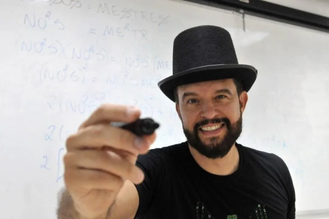

Por que a Bússola?
Muitos calouros chegam à FCTE sem entender bem as diferenças entre as engenharias, os projetos disponíveis e os caminhos profissionais possíveis. A Bússola transforma essa incerteza em exploração guiada, sem decidir pelo aluno.
A Bússola FCTE usa interesses, estilos de aprendizagem e uma função de afinidade inspirada em Cálculo I para ajudar calouros a explorar as engenharias antes de escolher um rumo.
Muitos calouros chegam à FCTE sem entender bem as diferenças entre as engenharias, os projetos disponíveis e os caminhos profissionais possíveis. A Bússola transforma essa incerteza em exploração guiada, sem decidir pelo aluno.
Um questionário gamificado para entender seus interesses e estilos de aprendizagem.
Nossa função de afinidade calcula a proximidade entre seu perfil e os perfis técnicos da FCTE.
Receba recomendações de laboratórios e projetos alinhados aos caminhos possíveis.
Você demonstrou interesse em lógica, criatividade e sistemas digitais. Explore também Eletrônica se gostar de hardware e automação.
Transformamos o seu perfil de ingresso em exploração técnica através de um modelo explicável.
Suas respostas ao diagnóstico são processadas e transformadas em um perfil de interesse multidimensional.
Cada uma das 5 engenharias da FCTE possui um perfil de referência técnica calibrado por especialistas.
A função de afinidade transforma a diferença (d) entre o perfil do aluno e o curso em uma pontuação de 0 a 100.
Desenvolvido nas aulas de Cálculo I com o Professor Ronni Amorim
Este algoritmo foi criado com um propósito especial: utilizar exclusivamente os conceitos matemáticos que aprendemos durante o semestre de Cálculo I. A beleza deste modelo está na sua simplicidade: usando coisas básicas como limites, funções exponenciais, a regra da cadeia e derivadas como taxa de variação, conseguimos montar um sistema completo de recomendação!
Para calcular o quanto um aluno combina com um curso, usamos a fórmula da distância entre dois pontos junto com uma função exponencial. A ideia é: quanto maior a "distância" entre o que o aluno gosta e o que o curso exige, menor a afinidade. É igualzinho ao decaimento exponencial que vemos nas primeiras provas de cálculo!
Espera, derivadas parciais não são de Cálculo II? Sim! Mas nós demos um jeito: para saber qual matéria pesou mais no resultado, nós tratamos todas as outras notas como números constantes. Assim, a afinidade vira uma função de uma única variável \( x \) (por exemplo, só a nota de programação). Usando a velha Regra da Cadeia, a derivada fica:
Essa derivada nos dá a Taxa de Variação instantânea! Com ela, sabemos matematicamente qual habilidade está puxando a nota do aluno pra cima ou pra baixo, permitindo que a bússola dê conselhos baseados em Cálculo I puro: "Sua nota de programação foi o fator que mais alavancou sua afinidade com Engenharia de Software!"
Imagine um cenário simples com apenas dois interesses: \( x_1 = \text{programação} \) e \( x_2 = \text{sistemas físicos} \):
Distância Euclidiana ao Quadrado:
Aplicando a afinidade com a constante \( k = 0.03 \):
Depois de calcular a afinidade com cada curso, o sistema só precisa fazer uma lista, do maior para o menor:

Criador do Método Eight • UnB
O Eight é um percurso de aprendizagem inovador criado pelo professor de engenharia Ricardo Fragelli, da Universidade de Brasília (UnB). Reconhecido nacionalmente (vencedor do Prêmio Top Educacional), o método transforma a sala de aula ao substituir as tradicionais aulas expositivas por metodologias ativas.
No Método Eight, os alunos mergulham em projetos práticos de intervenção, atividades comunitárias, visitas técnicas e até na criação de divertidos talk shows. O grande objetivo é despertar o protagonismo do estudante, estimular a criatividade e reacender a paixão pelo aprendizado colaborativo.
O nome "Eight" vem do grande desafio final da disciplina: uma apresentação cronometrada de exatos 8 minutos. Nesse momento decisivo, os alunos precisam sintetizar todo o conhecimento adquirido no semestre e conectá-lo profundamente com suas próprias trajetórias de vida.
A Bússola FCTE nasceu diretamente inspirada nessa filosofia: colocar o aluno no centro e aplicar o conhecimento teórico e matemático em projetos que fazem a diferença na vida dos calouros de engenharia!
Descubra os caminhos possíveis e inicie sua jornada de exploração guiada na FCTE.
Descobrir minha bússola explorePlano de Validação: Em fase de calibração de pesos com coordenadores, veteranos e estudantes dos cursos.